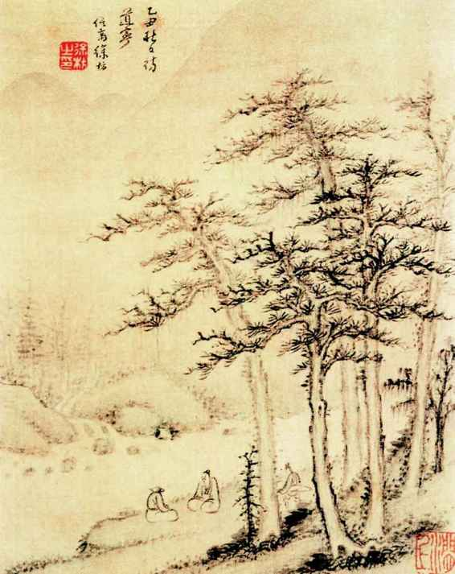
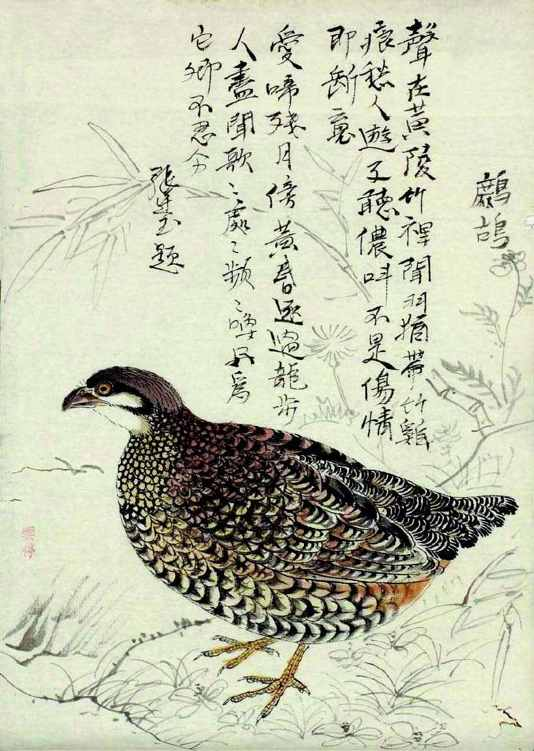
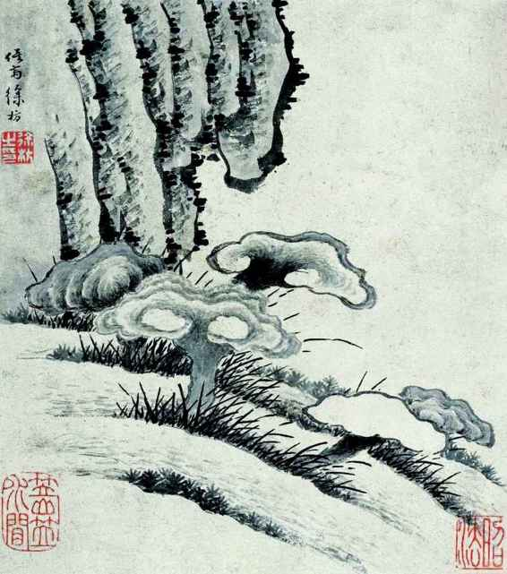
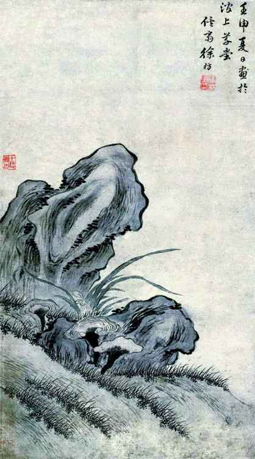
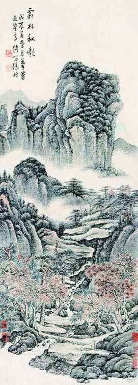
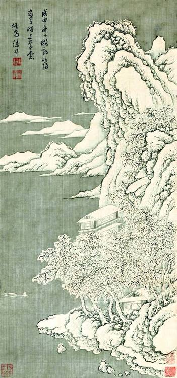
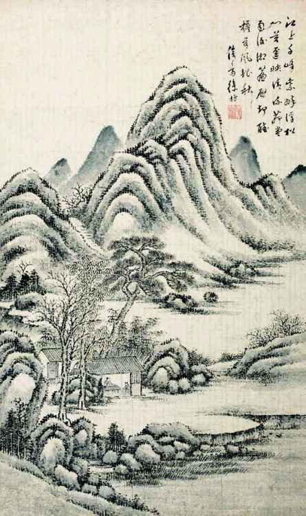
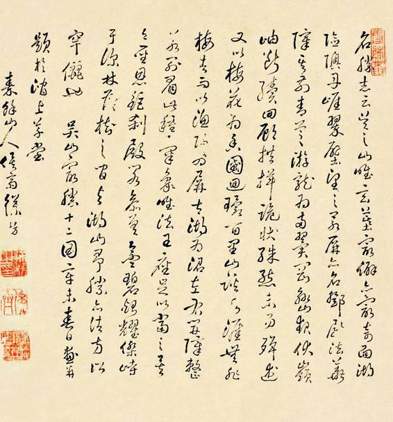
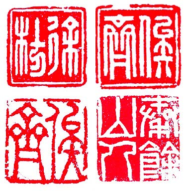

今人喜谈“秀”，觉得没什么事情是真的，什么都可以是表演。古人虽无此字眼，对徐枋也不免有理解的障碍。此人吃那般苦，遭那般罪，为啥？总有所求吧？以读书人历来喜欢沽名钓誉的特性，藏头露面、神秘其踪这一套，经常作为搏出位的术策，以触发思贤若渴、求访高人的情节。自打有了刘玄德三顾茅屋的典故，这就成了一种习惯的思路，不但某一方心存此意，另一方也乐得配合，去演礼贤下士的角色。眼下，徐枋也唤起类似反应。
长洲县知县田本沛投书徐枋：
恭惟老先生鸿飞冥冥，天际人也。弟心切识荆，而风尘面目，自愧不堪登硕人门……昨面按台卢大人，对弟辈极道老先生之高，心切仪之。老先生何吝一见，定有为台台（旧时对官长的尊称，应为“台臺”，今以简体字乃如此）处之最当者也。[62]
徐枋答书，以身体奇差为由谢绝：“经年伏凷，鸡骨支苫，身不胜衣，口绝粥，余气游魂，百事尽废，所欠惟一死耳。执事试思鲜民之生也如此，而尚能扶之而起，令入世法乎？”[63]世法二字，才是拒绝的真正原因——你们这些满清的官员，我们以何礼相见呢？
按台卢大人觉得不给面子，命另一下属吴县知县汪爚南再致信徐枋，除“南州高士，未及握手，殊云耿悒”的恭维话，还稍施压力：“概以引避相绳，未免触忌，有累明哲耳。祈台兄速裁之。”[64]徐枋见信，也有点犯倔，说“且先人毕节捐生，藐孤（死者遗属之谦称）义当相从止水，更不敢以应死之身随时俯仰。”[65]我本是不想活的人，您看着办吧。
事情不了了之，顾茅庐、礼贫士的戏剧没有演成，后来的地方官大约吸取了教训，不复讨此没趣。直到康熙二十四年（1685），徐枋六十四岁时，一位更高级别的官员出现。其人便是汤斌，清初理学名臣，一生做过明史总裁、礼部尚书、工部尚书等，入了“贤良祠”，名誉足够正。康熙二十三年，江苏巡抚出缺，康熙皇帝就把他派来任这个抚台。第二年，就屈尊来访徐枋。他本人既为理学名家，对知识分子那套讲究自再清楚不过，来找徐枋时，以其身份和地位，居然脱掉官服只着便装，不携任何随从，只身入山。《年谱》记之：
睢阳汤公斌抚吴，屏徒从，微服访先生者再，先生预走避，留老苍头宿门外，扣门不启。汤公喟然曰：“贤者不可测如是耶？”徘徊久之乃去。君子两贤之。是岁，汤公建祠于虎丘以祀文靖，杨明远处士炤以诗纪之。[66]
来访不止一次，徐枋都躲开，只托村里一老头替他看门。要说汤斌此来，脱了官服，意思大概是只以学者相见。徐枋硬是不肯。汤斌看来是真诚的，并不见怪，反于当年在虎丘新塘桥徐汧赴水处，建一座祠堂纪念他。对此，徐枋亦无分毫表示，倒是他的朋友杨明远去祠堂看过，回来写了一首诗。
但徐、汤会面之未成，居然成了好些人的心事。他们想象，倘若“理学名臣”、“海内高士”得以聚首，该是何其之盛？结果，过了一百二十九年，到康熙重孙子嘉庆皇帝的时候，忽然冒出来一封汤斌写给徐枋的亲笔信：
先生清名满东南，弟斌幸得拜见颜色，窃自以为不见绝于巢许，此宿世有缘也。连日捧诵大制，觉道气流行，溢于言表。文字之外，孤儿诗一篇，弥见忠厚悱恻之意，令人读之百回不厌。所诣至是，能不敬佩。并赍到拙撰散体二首、恤葬一则，深悯吴民，用意良苦，望即批示来役，感望之至。[67]

《仿许道宁松下听泉图》
许道宁，北宋奇人，以采药、卖药为生，后为招顾客，随药送画，竟有画名，其画多写萧山野水。徐枋生存状态与许道宁颇有暗投。画内人物对面枯坐，泉声松风，意境高旷。

《鹧鸪图》 清•余省绘
这就是“飞必南翔，集必南首”的怀南之鸟。可惜我们没有徐枋亲绘之图，此画为乾隆时画家余省（曾三）作，张廷玉题诗。

《芝石图》
徐枋爱画兰、芝。古以兰、芝为高格。在他画中，兰、芝常与石相倚。他曾指出，宋遗民画兰草从不沾土，而灵芝的可贵，也在于不依污泥浊土而活。

《兰芝图》
壬申即康熙三十一年（1692），是年徐枋七十一岁。

《霜林秋艳》
徐枋束身土室、屏绝人迹，但并不自我幽闭。他爱自然，不时有踏游之举。此画是对他这一面的呈现，虽然设色纤淡，但当描绘自然时，枯索的生命却突然溢出了色彩。

《江上雪霁图》
岸岩裹雪，莹白至洁，唯美之图，笔触精雅。如不知作者真实景况，难免以为他优游恬适，实则隆冬腊月中，他不光常饿肚子，身上也只有一件单衣。画中的美洁，与生活体验无关，纯为他精神之表现。

《秋林茅草堂》
我们可将图中山峰视为秦余山，将茅屋视为涧上草堂，而以此画为徐枋自己生活的写实。茅屋内一男人一童子各坐案前，就像是徐枋正在课子。

徐枋墨迹
徐枋不惟擅画，亦工书，兼糅行书、章草，是他的特色。

印章四方
其一“徐枋”，阴文；其二“俟斋”，阴文；其三“俟斋”，阳文；其四“秦余山人”，阴文。
若依此信，徐枋、汤斌竟是见了面的。信发现于嘉庆十九年甲戌，时任江苏巡抚的初彭龄，接待了据称是徐枋后人的某来客，手执此信，请初彭龄作跋。初彭龄的心理，自然和大家一样，如获至宝：“余窃惟俟斋国初高士，文正公当代名臣，百余年来，海内声望，如在目前。余生也晚，亦深幸得遇山民，获见前贤手迹，如聆两先生之謦欬也。因沐手敬识数语于后。”[68]来人请他作这个跋，其实相当于文物鉴定，借重其言、变伪为真。但正像罗振常指出的，此札断系“伪托”。此前，无论诸家或地方府志，所载都是汤、徐未晤，百年后，却乍现此信。况信中口吻，既明显有“后学仰视”视角，又颇陶醉和玩味着双璧先贤终得一晤。尤其汤斌谈己作，自称“深悯吴民，用意良苦”，殊非合体。这封信，如果是徐枋后人造假，应出于增重涂饰之私心；倘系旁人伪托，便是好事者以制造名人“佳话”之所为。
按照经验，隐者避官不见，往往是嫌来者职衔不够，或放长线钓大鱼，或攒足人气、等待更合适的时机。然而徐枋，县处级不见、厅局级的按台婉拒也罢了；眼下，来了省部级高官，布衣枉驾、给足面子，还让人家吃闭门羹，这就不免让人不懂。于是有人揣摸，既然不求显身，应该意在扬名吧？一位王姓书生，我们不详其名，就这么猜测徐枋。从徐枋语气看，彼此还是朋友。可对这位朋友，徐枋却发了很大的脾气：
仆三十年来息影空山，杜门守死，日慎一日，始则不入城市，今更不出户庭，仆之自处确乎不移，然亦冀友朋之默体吾心，有以相成也。今足下自称与仆相知，乃尝言时称颂我于当世，已大谬矣；又尝谓我某公欲求见，某公欲问遣，某公欲一及徐子之门，不更谬耶，何不知我如是耶？以仆今日所处，一与世接，便是祸机，何也？从之则改节，违之则忤时，忤时祸也，改节尤祸也。故仆于斯世，宜使日就相忘，而不宜使误有采取也。切望足下，凡见当世之人，绝勿置我于口颊，总勿道及我一字，更勿使今之人因足下而阑及于我，则大幸矣。譬如芝兰生于篱壁，而毋为之径路，则得以自全其芳；珠玉远在山海，苟有为之梯航，则不得自匿其宝。若足下贸贸然逢人说项，是爱我者害我，誉我者毁我也。此吾之所以叹恨，大声疾呼，欲足下之痛改也。
王生做了什么？无非是逢人推崇徐枋，称道其境界，来引起世人敬仰。王生做这些，一定是以朋友之爱替徐枋考虑，觉得这能让徐枋高兴。他这么想，也没什么不对。不料，徐枋“人怕出名，猪怕壮”。他恳求王生，不要炒作他，不要让他扬名，不要以爱的名义做伤害他的事。他举退翁和尚为例，说自己曾赠以书法，退翁和尚平时悬于方丈之内，但是一天，有官员来寺院，退翁和尚却取下藏起来。徐枋说：“此真知我矣。中夜思之，时为流涕，诚感其心知也。”希望朋友们都这样待己。而这位王生，屡言不听，屡请不从。他不得不说了比较难听的话：以后，无论王生遇见，不必齿及一字，只当徐枋已经死掉；实在想说，就说徐枋这个人如何乖张、如何不近人情，万勿有半句好话，“以绝当世之垂念，则受赐多多矣。”[69]
记得好像在茨威格那里，读到过关于人格魅力型政治领袖的论述。说对于这种人，一定的灾厄不光必要且大有好处。比方，曾坐过牢或遭受一些坎坷、打击，反而有增他的威望，令世人对之更加心驰神往。我觉得这倒不只适用政治家，任何人，如果受过苦中苦，或有点稀奇古怪的经历，都会平添丰厚的人生资本。隐士们把自己藏起来，使外界到处流传他们的种种神秘，把大家胃口吊得老高，而愈以一睹真容为幸。
徐枋却要打破我们的认识。他说他很苦恼，大家总是依经验或习惯心理揣想他。“不知我者以为异”，“知我者又从而矜诩之”，不了解我的人把我当怪物，了解的人又把我拿去到处夸耀。“弟谓如吾昔之所遭，则我今之所处正自不得不尔”，实际自己所做的，不过是因内心和处境而不得不这样，自然而然，没有什么可奇怪，更没有什么了不起。他说，最不愿意被作为“名士”看待和谈论，“实恐同我于名士之妄语，无其事而夸其谈”。[70]
或许我们只好接受他的表达：隐，是目的本身，不是任何意义上的手段，不是姿态，不是敲门砖，不是计谋，也无关乎崇拜、虚荣或沽名钓誉。虽时有“明却周粟，暗饮盗泉，公义虽严，私交不废，一己徒养林泉之望，子弟仍为垄断之登。甚至中道回车，甘作美新之颂”[71]那种人与事，但徐枋一生，从始至终，我们不会找到这种破绽。